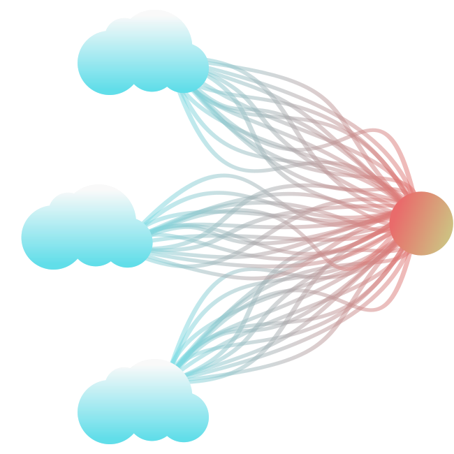
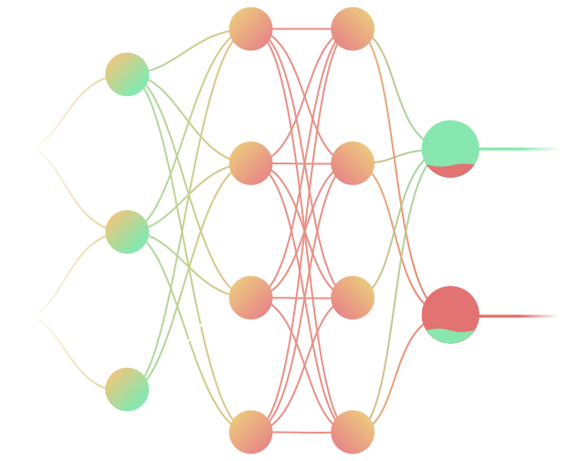
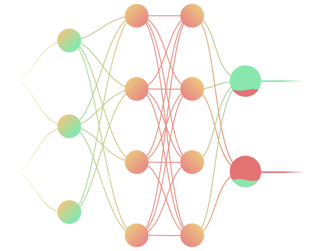
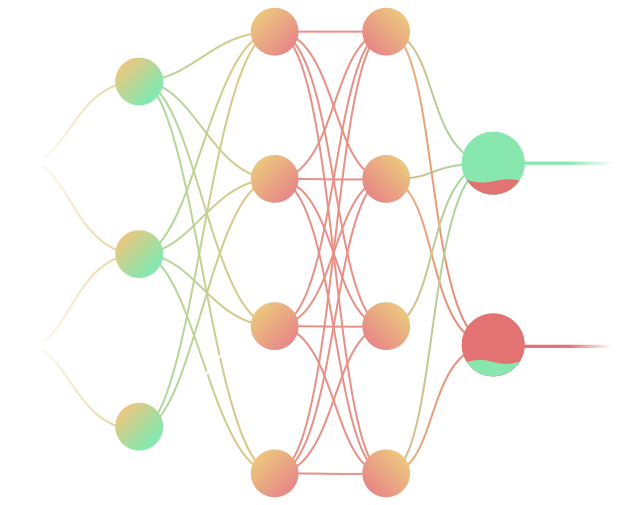
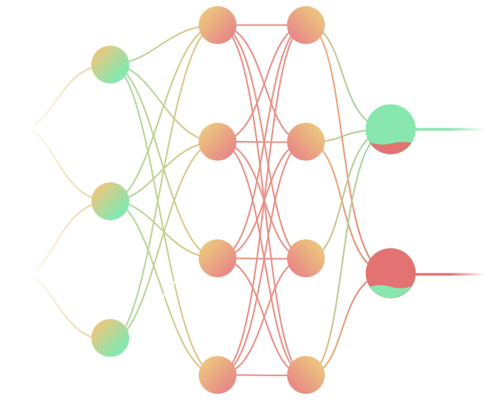

 



My work is a direct reflection of my commitment to being a polymath in my field. While my main focus might be in my silly cubicle in corporate world, but my weekends are usually reserved for diving into a variety of projects that challenge me in new ways. This is where I push boundaries, experiment with Art-Code fusion, and build things just for the joy of it. This diversification not only keeps my skills sharp, but also fuels my creativity. You can take a look at a few of my projects below or view all projects directly
This program simplifies the analysis of complex, large-scale JSON datasets by visualizing them as an interactive tree structure. It allows users to easily identify the file's depth, distinguish between metadata and core data, and grasp the overall hierarchy through an intuitive pictorial representation, making daunting data structures much more accessible
This case study developed a churn prediction model for 7,000+ telecom customers. Following data cleaning and EDA, the model was refined through multiple iterations of feature selection using RFE and VIF to eliminate multicollinearity. After reaching satisfactory training results, the model was validated on test data to predict churn probability effectively
This Kaggle-sourced dataset analysis explored chess game trends using Seaborn visualizations. The workflow involved cleaning metrics like win rates and move counts, followed by feature engineering to categorize matches into Bullet, Rapid, or Classical formats. This structured Exploratory Data Analysis (EDA) provided deeper insights into player behavior across different game speeds
With a strong foundation in Python, I build solutions by integrating diverse libraries. I love exploring and combining packages—like those for data analysis, web frameworks, and machine learning, to tackle new challenges. This approach lets me create flexible, custom tools that go beyond standard applications. For more insight on this, you can look into my projects
Python
Numpy
Pandas
SQL
My passion for technology goes beyond coding! It's the power to create and explore anything that excites me. While I have a strong foundation in coding, my experience extends across various domains
I specialize in creating 3D animations that make tough concepts easy to grasp. By blending technical accuracy with polished visuals, I turn complex ideas into clear, engaging stories. My goal is to bridge the gap between "hard to learn" and "impossible to forget" through high-quality, immersive motion
I use clean, scalable vector graphics to break down complex scientific data into clear, digestible visuals. By focusing on technical accuracy and sharp design, I transform abstract information into intuitive diagrams that make learning effortless. My work ensures that even the most intricate details remain polished and easy to understand

I champion a 100% Free and Open Source (FOSS) ecosystem on Linux to ensure my creative process is transparent and unrestricted. By using community-driven tools, I maintain full ownership of my work without subscriptions or vendor lock-in. This ethical approach fosters collaboration and ensures my scientific simulations are truly accessible